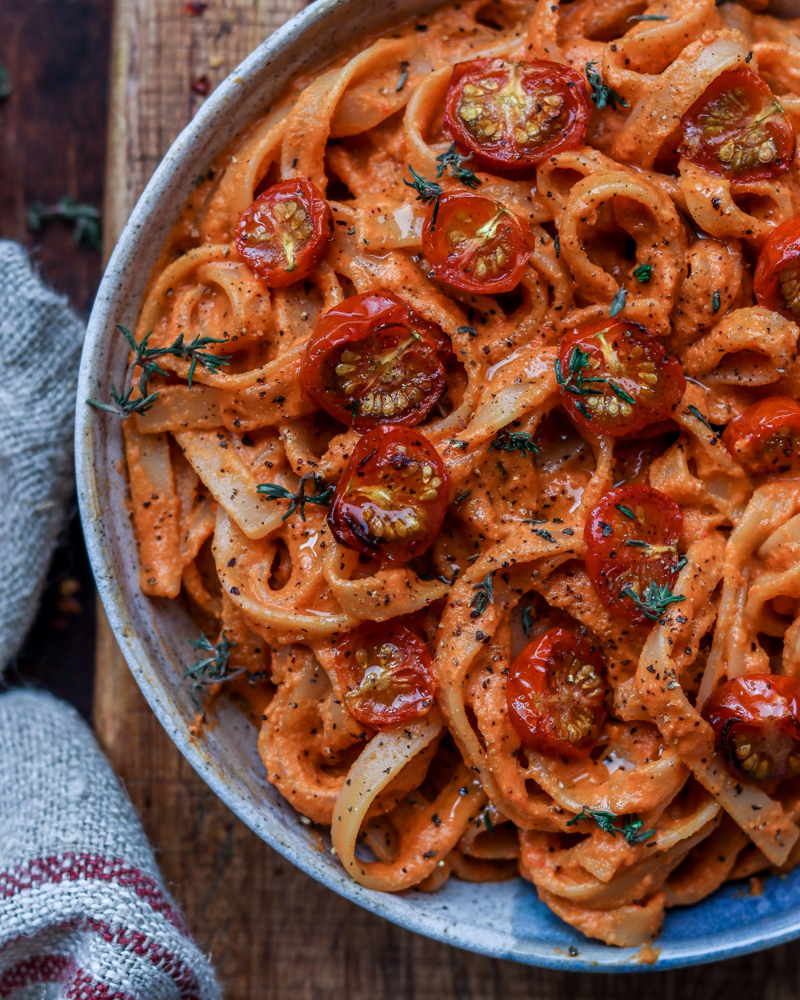

Книга рецептов
На этом сайте вы найдёте несколько несложных и вкусных рецептов.
Готовка не займёт у вас немного времени, а результат заставит порадоваться всех, кто будет пробовать ваши блюда.
Нажмите на картинку, чтобы перейти к рецепту, или воспользуйтесь меню слева.

Сырники

Тыквенный крем-суп

Сливочно-томатная паста

Яблочная галета